How to Troubleshoot ECU Controlled Systems Electrical Circuit Inspection Method and Procedure |
Resistance Measurement Conditions for Electronic Components
Unless otherwise stated, all resistances are measured at an ambient temperature of 20°C. If measured at a high ambient temperature immediately after the vehicle has been driven, the resistance will be out of specification, so perform the measurement after the engine has cooled down.
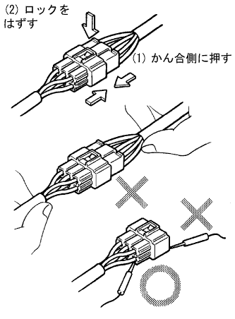 |
Handling Connectors
When disconnecting a connector with a lock, push the connector toward the mating side to make the lock claw easier to move, then release the lock.
When disconnecting a connector, hold the connector, not the harness.
Before connecting a connector, check that the terminals are not deformed, damaged or pulled out.
When connecting a connector with a lock, push it in securely until the lock clicks.
When inspecting a connector with the Toyota electrical tester, use a mini test lead and inspect from the back side (harness side) of the connector.
Connector Inspection Procedure
With the connector connected, hold the connector housing and check the insertion and locking condition. (Engagement condition)
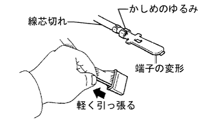 |
With the connector disconnected, check by pulling lightly on the wire harness. (Terminal pulled out, terminal crimping condition, broken core wire) Visually check for rust, metal particles, water, etc. and for bent terminals. (Corrosion, foreign matter, deformed terminals)
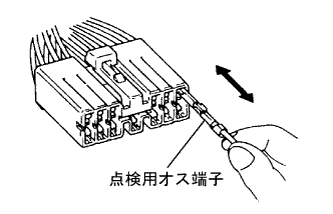 |
Prepare a terminal identical to the male terminal, insert it into the female terminal, and check the terminal contact pressure, engagement condition and sliding resistance.
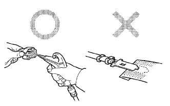 |
Connector Terminal Repair Method
If the contact area is dirty, clean it using an air gun, shop rag, etc. Never polish the contact area with sandpaper, etc., as this will remove the surface plating.
If the contact pressure is abnormal, replace the female terminal. In this case, if the corresponding male terminal on the component side is gold-plated (gold color), use a gold-plated female terminal; if it is tin-plated (silver color), use a tin-plated female terminal.
If there is no abnormality in the contact area, clean the contact area with an air gun, etc. and apply connector grease (part No. 08887-02106). (This prevents oxidation and wear of the contacts.)
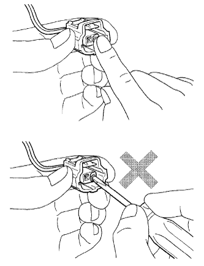 |
Toyota Genuine Connector Grease
Connectors in locations exposed to water, such as the alternator and headlights, are filled with grease (white) to prevent terminal corrosion.
If there is insufficient connector grease, or if a terminal has been repaired, fill the female terminal with connector grease (part No. 08887-02106).
There is no problem if grease adheres to the O-rings and rubber plugs of waterproof connectors, but if it adheres to other rubber parts (weatherstrips, wire harness grommets, etc.), they may deteriorate or discolor. If grease adheres, wipe it off immediately.
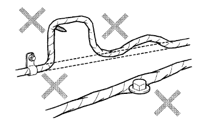 |
Handling Wire Harnesses
When removing a harness, check its routing and clamping before starting work so that it can be restored correctly.
Do not twist, pull or slacken the harness more than necessary.
Do not allow the harness to interfere with high-temperature areas, rotating parts, sliding parts, vibrating parts or sharp edges (panel edges, screw tips, etc.).
When installing parts, do not pinch the harness.
Do not tear the harness covering. If it is torn, replace it or repair it securely with vinyl tape, etc.
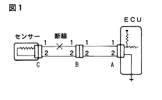 |
For the open circuit in the wire harness shown in illustration 1, perform a continuity check or voltage check to determine which section is open.
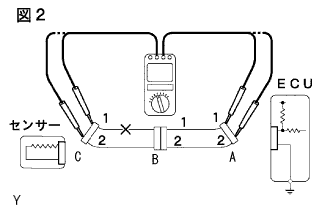 |
Check the continuity.
Disconnect connectors A and C and measure the resistance between them.
In the case of illustration 2, there is no continuity (open) between terminal 1 of connector A and terminal 1 of connector C, and there is continuity between terminal 2 of connector A and terminal 2 of connector C. Therefore, the circuit between terminal 1 of connector A and terminal 1 of connector C is open.
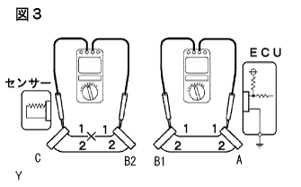 |
Disconnect connector B and measure the resistance between the connectors.
In the case of illustration 3, there is continuity between terminal 1 of connector A and terminal 1 of connector B1, and there is no continuity (open) between terminal 1 of connector B2 and terminal 1 of connector C. Therefore, the circuit between terminal 1 of connector B2 and terminal 1 of connector C is open.
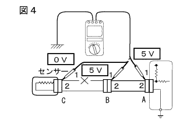 |
Check the voltage.
In a circuit in which voltage is applied to the ECU connector terminal, check for an open circuit by performing a voltage check.
As shown in illustration 4, with each connector connected, measure the voltage at the ECU5V output terminal between body ground and terminal 1 of connector A, then terminal 1 of connector B, then terminal 1 of connector C, in that order.
If the results are as follows, the wire harness circuit between terminal 1 of B and terminal 1 of C is open.
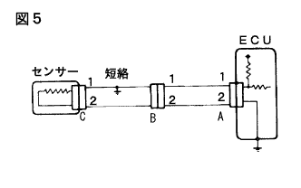 |
If the wire harness is shorted to ground as shown in illustration 5, perform the [continuity check with ground] to determine which section is the cause.
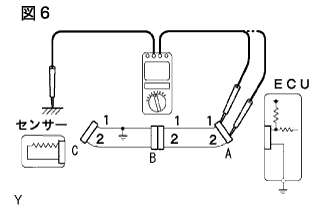 |
Continuity Check with Ground
Disconnect connectors A and C and measure the resistance between terminals 1 and 2 of connector A and body ground.
In the case of illustration 6, there is continuity (short) between terminal 1 of connector A and body ground, and there is no continuity between terminal 2 of connector A and body ground. Therefore, the circuit between terminal 1 of connector A and terminal 1 of connector C is shorted.
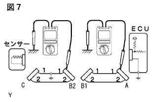 |
Disconnect connector B and measure the resistance between terminal 1 of connector A and body ground, and between terminal 1 of connector B2 and body ground. There is no continuity between terminal 1 of connector A and body ground, and there is continuity (short) between terminal 1 of connector B2 and body ground. Therefore, the circuit between terminal 1 of connector B2 and terminal 1 of connector C is shorted.
Disconnect the connectors at both ends.
Check the connector terminals for rust and foreign matter.
Check the rounded sections for looseness or damage, and check that the terminals are securely locked in the locked position.
Prepare a male test terminal, insert it into the female terminal and pull it out.
First inspect the ECU ground circuit, and repair it if it is defective. If it is normal, the ECU is defective; replace it with a known good ECU and check whether the problem symptom occurs.
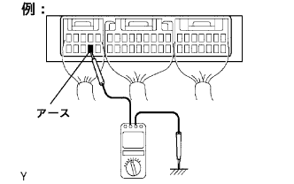 |
Measure the resistance between the ECU ground terminal and body ground.
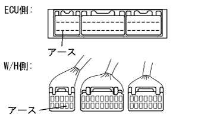 |
Disconnect the ECU connector, check that the ground terminals on the ECU side and wire harness side are not bent, and check the contact pressure.